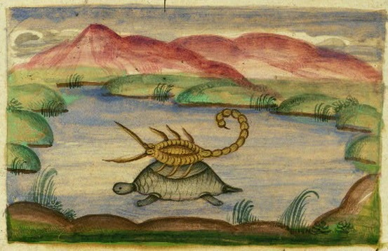

10.26.15
Posted in Europe, Patents at 6:39 am by Dr. Roy Schestowitz
Potentially a contributing factor to staff suicides
Summary: Critical remarks about the poor treatment that EPO management offers to staff, whereas the EPO’s Central Staff Committee and the staff union — the one that the EPO’s management is frantically crushing — try to be attentive and helpful
THE MANAGEMENT AT THE EPO, which chose to treat the staff like an enemy rather than a gift, already recognises its poor recruitment capabilities in the face of a notorious track record and negative publicity (bribed-for publicity does not count [1, 2]) and brain drain (poor staff retention and in many cases suicides). Rather than extend an olive branch to what remains of the talent pool, the EPO continues to crush the rights of staff, assuring that things won’t change for the better.
“Rather than extend an olive branch to what remains of the talent, the EPO continues to crush the rights of staff, assuring that things won’t change for the better.”People who are tactlessly declared “invalids”, which is a rather offensive term that’s sometimes used to refer to people who have developed health problems, are also being pressured by the EPO’s management. It seems like invalid are prevented from doing some benevolent community service. How is that for a strategy? Is causing despair and hopelessness going to help the reputation of the EPO? The premise is that this can mitigate or eliminate conflicts of interest, but in practice it is a lot worse. Crushing the basic rights of European workers and spinning that as a moral advantage is, quite frankly, offensive at best.
“How to make sure invalids remain invalid” is what SUEPO called it, noting that help is around the corner, not at EPO but at SUEPO. People who are already suffering have a safety net or a cushion not from the employer that really ought to value their skills but from their colleagues, who fight for the rights of their fellow men and women.
Until now invalidity meant “not being able to perform your duties or similar duties at least at a 50% part-time basis” (previous Art. 62(a) par. (2) ServRegs). For new invalidities the limit has now been lowered to 30%. Nevertheless: those who have been held invalid, either under the old or the new system, may have a residual work-capacity, or may be able to have other activities. Under the old system those concerned were obliged to inform the administration of any paid activities and their invalidity pension was reduced accordingly. The new regulations, however, on top of obliging invalid staff to remain at their place of employment for at least 10 years and until the age of 55, forbid any gainful activity or employment. We do not to see the purpose of these restrictions, other than punishing staff for falling ill. We have often objected to the “Residenzpflicht” meaning that colleagues are kept away from the support of their family and friends “at home” if that is elsewhere than their place of employment. Note that for every absence permission must be requested in advance. With the Personnel Department in disarray swift, fair treatment is not guaranteed. With the additional interdiction of such activities, invalids are pushed even further in social isolation. The unclear formulation of the new regulations further opens the doors to arbitrary allegations against colleagues. It could well be that the implementation goes even
further than what one could expect when reading CA/D 2/15. A part of the new regulation will come into force on 01.01.2016. SUEPO will help those of its members who are concerned. Do not hesitate to contact us.
“Your new career,” SUEPO claims, is not so promising in the Battistelli-managed EPO. All the benefits are fading away and the work environment becomes more militant over time. “Back to the 1950s,” SUEPO calls it, alluding to very terrible workers’ rights (after a devastating world war). Here’s how they put it:
While the “new career system” was being designed, we predicted it would be a nightmare.
Some did not believe us; some hoped against all hope that it would not turn out to be so bad; some thought one would manage to survive the rat race. But now, already in the early implementation phase, the chickens are coming home to roost.
Are you a pregnant woman? Are you sick, requesting unpaid leave to refresh your mind, asking for a parental leave to take care of your children, asking for a family leave to take care of your old and sick parents? If you are in DG2, this absence will be held against you when assessing your contribution to your unit, and will have a negative consequence on your career prospects. In Patent Administration, a head of unit encouraged by this new “approach” that comes from the top even dared to state “Sick people should be happy to get paid while they are sick”. No comment. Similar plans are being hatched in DG1.
The recently published President’s guidelines on rewards for the “new career” further punish close to 40% of staff whose career is frozen (not step, no promotion).
A Brave New World is taking shape.
Let’s not forget institutional harassment and menacing threats against people who merely ‘dare’ to exercise their rights.
Interesting links shared by SUEPO include this article in German. “While Mr Battistelli and Ms Bergot introduce sick leave control systems that go against staff well being,” said SUEPO, “and are incompatible with national laws and medical ethics/secrecy, physicians form the university of Magdeburg plead for less sickness certification for employees in Germany.”
It is followed by a joke about Volkswagen (VW), where management is almost as corrupt as in the EPO (Volkswagen is in headline for only one major scandal, unlike EPO): “Sharp decrease of the sickness figures in the EPO: is VW in charge of measuring?”
Another joke is an extract from Job Profiles of all Staff: “To be flexible and to adapt in a positive way, to sustain performance when the situation changes, workload increases, tensions rise, ambiguity mounts or priorities shift.”
The punch line? “And when all of that happens at the same time…?”
Working for the EPO isn’t the ‘fun’ which in-progress propaganda tries to convince the public that it is. “PAX vicious spiral,” as SUEPO called it, describes the China-esque measurements of staff output, which annuls or ignores any human factors. People are reduced to machines and are treated accordingly. To quote:
In the recent years, the PAX data related to the so-called “Reference Examiner” had become fairly stable. For instance the 2014 productivity P of the reference examiner had only marginally increased or decreased (depending on the Cluster) when compared to the productivity P of 2013. This reflected the normal stabilisation of the productivity in DG1 after years of improvement of DG1′s performance, and was simply the proof that “sky is not the limit” if one wishes to keep a reasonable level of quality.
This was not enough for management. With the introduction of the “new career” Mr Minnoye (VP1) drastically changed the substance of the PAX Guidelines: fairness elements and safeguards have been removed but the calculation of the productivity of the Ref Examiner remains. This means that, to calculate the productivity P of the Ref Examiner for a year “n”, the data of the previous 3 years (n-1, n-2, n-3) of all experienced examiners, i.e. with no learning curve, are used.
The production and the productivity in DG1 have made a quantum leap in 2015 with respectively +13% and +7% (Jan-August compared to the same period in 2014). As a consequence, the productivity P of the Ref Examiner will mechanically increase by an amount between 2% and 3% next year.
This can only reassure management that “putting a gun to the examiners head” works beyond their wildest dreams.
We can safely predict that targets will be even higher in 2016 than in 2015. The insane production pressure and the current “management” methods will remain. With their deleterious consequences on staff’s health and the quality of the work performed at the EPO. But does management care?
Given the many EPO abuses (in the Wiki we have broken them all down to around a couple dozen), we humbly doubt these bureaucratic people care about how ‘low level’ staff (technical people, often with doctoral degrees) feels. They cannot actually care considering how they have been treating such ‘low level’ staff. We predict that unless some radical measures/steps like head-rolling are implemented (the current management is impossible to negotiate with), it won’t be long before the EPO has more job openings than patents issued in a month. Patent examiners would not have a hard time finding employment elsewhere given their skills; it’s just that their initial salary might — at least initially — be a lot lower. But what price can one put on happiness and health? It seems certain that managers at the EPO will need to compromise, apologise, reform, or simply resign, making room for new management that is not distrusted and at times literally loathed by the workers. A lot of damage has been done therein and in order to put an end to this distrust and loathing considerable changes are required. Battistelli, based on some claims, has already threatened to resign; maybe that’s imperative at this stage.
Incidentally, this morning SUEPO posted the following message about “the social situation of the European Patent Office”:
In the report of the 145th meeting of the Administrative Council (AC), the Council announced its decision to initiate a review of the social situation at the European Patent Offce and to continue the exercise aiming at union recognition talks.
In a letter to Mr Kongstad, Chairman of the AC, and Mr Battistelli, President of the Office, SUEPO reminds that the initial talks were interrupted because, at precisely the same time as the talks were starting, the Office Administration considered it appropriate to initiate an investigation with the help of Control Risks against staff representatives and/or union executives.
The closure of this investigation and any other investigation or disciplinary procedure targeting staff representatives and/or union officials – without prejudice to the accused – is a condition sine qua non for recommencing the talks.
A copy of the letter can be found here.
This, in turn, links to a letter (in PDF form) which states:
Review of the social situation at the European Patent Office
Dear Mr Kongstad,
Dear Mr Battistelli,
In the report of the 145th meeting of the Administrative Council that appeared on the external website of the EPO you informed the public that:
The Council decided to initiate a review of the social situation at the European Patent Office after five years of reform setting and implementation.
Several measures could contribute to a possible progress in this context:
- continuing the exercise aiming at staff union recognition, despite the difficulties met
- aiming at the elaboration of a negotiation strategy preserving all the results already obtained
- launching an independent external social study, in close co-operation with the President
SUEPO agrees that after five years of reform setting and implementation, a review would be appropriate. We also fully support the notion of an independent review. In view of the latter, a close co-operation not only with the President but also with the staff representation would seem necessary.
We are equally open to continue the union recognition talks. We remind you that the initial Union recognition talks were interrupted because, at precisely the same time as the talks were starting, the Office Administration considered it appropriate to accuse Staff Committee members and Union officials of harassing a colleague in the staff representation. These accusations of harassment, levied not by the alleged victims but by Ms Bergot, Principal Director Personnel, are clearly vexatious and entirely without merit. The closure of this investigation and any other investigation or disciplinary procedure targeting staff representatives and/or union officials – without prejudice to the accused – is a condition sine qua non for recommencing the talks.
Finally, we are somewhat surprised by the statement that the negotiation strategy should “preserve all the results already obtained”. If preservation of all the results is the aim, that would render both the review and the negotiations futile. We understand that you mean “all the positive results”. We can obviously agree with that aim but it may be judicious to point out that opinions may differ on what can be considered positive results. We are looking forward to discuss these points with you at the earliest possible opportunity.
Sincerely yours,
SUEPO Central
To summarise, witch-hunting of staff representatives needs to stop and an independent review by an external entity is still desirable because instruments of power inside the EPO are assumed to be part of the conspiracy to defend the higher management, hence crush the union/s and cover up institutional abuses. There’s something truly rotten at the EPO and we know — at least roughly — where it started. █
A fish rots from the head down: “When an organization or state fails, it is the leadership that is the root cause.”
Permalink
 Send this to a friend
Send this to a friend
10.25.15
Posted in Europe, Patents at 8:22 am by Dr. Roy Schestowitz
Mo’ patents, mo’ money, mo’ problems, so monopolists, the EPO, and patent lawyers benefit, respectively, at the expense of everybody else
Summary: New opposition to the EPO’s continued expansion of patent scope to plants/seeds and various foods, serving to monopolise even the very essential elements of life and potentially increasing prices of basic foods
OUR criticism of the EPO began nearly a decade ago, primarily because of software patents in Europe (the campaign against them culminated little more than 10 years ago). This is part of an international problem that so-called ‘trade’ deals like the TPP (globalisation in the interest of very few rich people) serve to promote. But since then we have criticised the EPO for many other things; among them were patents on life, which are equally controversial (even among programmers, not just in life science disciplines). We wrote a great deal about it back in 2009 and when the EPO entered the fray with this abomination of an expansion of patent scope we spoke out again. It’s all in our archives. Now there’s news as things get even worse.
“Just how much longer can EPO management flagrantly stretch the scope of patents in a shameless effort to increase revenue and pretend that innovation is on the rise when in fact it’s monopolisation and protectionism (food monopolies) that are on the rise?”A reader has suggested that we remind people of patents on plants, potentially “the next EPO scandal” because it’s still work in progress (an internal subject of debate). Just how much longer can EPO management flagrantly stretch the scope of patents in a shameless effort to increase revenue and pretend that innovation is on the rise when in fact it’s monopolisation and protectionism (food monopolies) that are on the rise?
One of our readers has taken stock of coverage about this issue, dating back even to 2013.
“On May 8, 2013,” said this reader, “the EPO granted a patent (EP 2140023 B1) to Syngenta for insect-resistant pepper plants [PDF]. According to critics: “Such plants should definitely not be patentable under European patent law.””
“A broad coalition consisting of 34 NGOs,” continued this reader, “farmers’ and breeders’ organisations from 27 European countries, filed an opposition to the Syngenta pepper patent.” [1, 2]
“A question was also asked in the European Parliament. Here is the answer from the EU Commission.” [by Barnier, a huge UPC proponent]
“The topic was covered by IPKat in August 2014. In May of this year, Glyn Moody wrote a piece about the EPO’s current questionable practices concerning the patenting of plants. The topic has now resurfaced again with the recent grant of another questionable pepper patent to Syngenta.” [1, 2] (articles from 2-3 days ago)
“The specification of the most recently granted patent can be found here.” [PDF].
Even though Techrights covered these issues more than a year ago they seem to be resurfacing and getting even worse. The EPO is clearly out of control because of greed. Its priority is not to serve the public or provide a service in the public’s interest; instead it helps large corporations (like the infamous Monsanto) besiege and rip off the public.
How does one say in French “let them eat patents”? █
“As far as genetic engineering for food, that is the great experiment that has failed. They literally have the entire world market against them. All those dreams… the blind will see, the lame will walk… has turned out to be science fiction. They are basically chemical companies selling more chemicals. They’ve been able to spread these herbicide-promoting plants around because it is more convenient for farmers who can just mass-spray their crops. But they’ve given absolutely nothing to the consumer while causing more chemical pollution and contamination.”
–Lawyer, Andrew Kimbrell, executive director of the Center for Food Safety (USA)
Permalink
Send this to a friend
Posted in Europe, Patents at 7:13 am by Dr. Roy Schestowitz
Photo credit (CC): Groupe LINAGORA
Summary: René Kraft, the EPO’s Chief Information Officer, is criticised for improper use of public money (65 million euros)
OVER a week ago we publicly invited readers to provide information about the hardware, networking (not just at hardware level but packet management/switching too), and software used both at the server and desktop/client ends at the EPO. We are trying to better establish a potential for conflicting interests, as shall become more apparent in future write-ups.
René Kraft, the Chief Information Officer of the EPO, Techrights previously mentioned in relation to his connection to Battistelli. Currently, we definitely need more information but we recently learned that the EPO’s IT roadmap is a “bottomless pit” (for obscenely huge spendings and a high budget, partly provided by European taxpayers to go into private hands). To quote one knowledgeable source:
When Mr Battistelli joined the EPO in mid 2010, he trumpeted proudly that with him, all would be better, much better than under his predecessors. He recruited a Chief Information Officer who had worked before for a company providing IT services to the French Patent Office (INPI) and gave him more power than any other PD or even VP2, nominally in charge of IT.
Twenty-four months and some 65 million EUR later, the results are conspicuous for their inconspicuousness. With the exception of a few improvements here and there – that can hardly qualify as IT investments – no major result worth the money spent is in sight. The current IT governance is becoming a place where in-house competence and knowledge are abandoned, leaving the playing field to expensive external bounty-hunters who come and go before having reached concrete results.
The lack of progress calls for an audit of IT. But then, if anything is to be learned from the past, Mr Battistelli will likely succeed in entrusting the Audit to yet another “trusted consultant”, who will surely find that all is compliant with… the EPO’s own unpublished rules.
If the above occurred in a EU institution, there would be a public debate and heads would likely roll. Not so at the EPO.
Kraft’s former employer, “Informatique CDC” (where he was Directeur General Delegue for 7 years), has a Windows Web site (quite a rarity these days, but historically it has been the case) and it is “a subsidiary of Caisse des Dépôts et Consignations,” according to Bloomberg. It is a financial organisation. Kraft previously spoke about migrations to OpenOffice, but given the lavish expenditure (as detailed above) we doubt Free/libre software was used in this case, otherwise the EPO would probably announce it. If someone can anonymously provide us with information about the computer systems at the EPO, that would be enormously helpful, especially for future articles which are work in process. █
Permalink
Send this to a friend
10.24.15
Posted in Europe, Patents at 12:58 pm by Dr. Roy Schestowitz
Scorpion’s instincts

The Scorpion and the Frog
Summary: The staff union of the EPO (SUEPO) expresses its views on the bogus “Union recognition talks”, which seem to promote a false sense of trust and leave the union leaders ever more exposed to union-busting
AS we promised a couple of days ago, EPO coverage is going to increase in terms of pace and depth. Next week we intend to look deeper inside the institutional corruption and also the granting of patents that never should have been granted. In the mean time, over the weekend perhaps, we wish to organise the Wiki based on themes, in order to make it simpler to navigate. The uninitiated should be able to promptly appreciate just how abusive the EPO has become.
One of the longstanding issues at the EPO is that the management always attacks the messengers who ‘dare’ to question the decisions of management. They are too arrogant to accept constructive criticism and instead they try to crush any morsel of dissent, criticism, disobedience, or the simple act of unionising (which is perfectly legal and protected by European standards). “The road to social peace,” as SUEPO calls it, would require “high level, independent mediation.” Here they are stating:
Mr Battistelli and Mr Kongstad have hailed “Union recognition talks” as the solution to the social conflict in the Office. SUEPO was sceptical from the beginning, for several reasons. One is that the prior reforms that caused the current problems are explicitly excluded from the present and future discussions. Another very fundamental reason is that any agreement or contract is meaningless if it cannot be enforced. We have already seen Mr Battistelli violates even rules he himself established as soon as they no longer suit him, and invokes “immunity” in order to uphold illegal practices. Blind trust is therefore not an option. In this context the “Memorandum of understanding” proposed by Ms Bergot (PD43) is quite revealing. Quite early on it states that “The union officials shall be bound by the legal framework applicable by the EPO” – a framework that the President can unilaterally change as he sees fit. The ongoing accusations of (and investigations in) alleged harassment amongst SUEPO officials and staff representatives (!), apparently targeting the better-known SUEPO representatives, also show that Mr Battistelli is more interested in destroying SUEPO than in recognizing it.
Thus far Mr Battistelli has refused to take on board any opinions other than his own. He has notoriously refused to respect unanimous recommendations of the Internal Appeals Committee and of the Disciplinary Committee – if these were in favour of staff. He has repeatedly refused to accept findings of invalidity by the Medical Committee. By now SUEPO very much doubts that there can ever be social peace with Mr Battistelli as President. But if there could be a road to social peace, it would have to come through high level, independent mediation. SUEPO has repeatedly expressed its willingness to participate in a mediation process. Here we do so again.
Having watched this for well over a year, it seems abundantly clear that neither Battistelli nor Kongstad would be interested in ever recognising a staff union. Battistelli’s bulldog, Željko Topić, went as far as saying that “SUEPO has no standing in this office.” How can they ever pretend otherwise? As long as there is no acceptance of any sort of input from ‘low level’ staff (meaning, in the case of the EPO, highly technical people), there won’t be peace. It’s a shame that the management is too thick (or perhaps arrogant) to grasp this. █
Permalink
Send this to a friend
10.23.15
Posted in America, Deception, Europe, Patents at 9:47 am by Dr. Roy Schestowitz
Promoting a swindle. Whose patent system is it anyway?
Summary: The USPTO, patent lawyers and the rest of the patents ‘industry’ carry on pushing for even more radical a system where parasites (like themselves) rather than inventors are financially rewarded, discouraging and retarding innovation in the process
THE USPTO has created a toxic environment for small businesses (and to a lesser degree medium- and large-sized businesses too) in the United States. In this new letter/column, published only yesterday, the author bemoans the current state of affairs:
Businesses large and small are unexpectedly receiving letters demanding money for alleged patent infringement.
“It leads to a false consensus, shaped for the most part by patent lawyers and other people who profit from the broken status quo.”This is not a bad interpretation/opinion, even though it focuses on patent trolls rather than patent scope (software patents for instance). There is clearly dissatisfaction with this state of affairs, but people from the USPTO shut their ears and pretend that everything is great. Last month we showed how David Kappos, the former head of the USPTO, became rather delusional because he is stuck in the echo chamber of patent lawyers and is now profiting from it (directly). Now we see the lobbyists’ favourite newspaper, The Hill, saying that “Attacks on patent system are unfounded” (that is the headline). Guess who wrote it… someone from an “intellectual property group” and the USPTO’s “former commissioner for patents”. No conflict of interests there? He pretends all fine and dandy at the USPTO and generally resists change. Quoting his own disclosure in full: “Stoll is a partner and co-chair of the intellectual property group at Drinker Biddle & Reath and a former commissioner for patents at the United States Patent and Trademark Office.”
Why are so many voices weighing in on these matters not scientists and people who actually apply for patents? Or people who actually create stuff (without necessarily applying for patents)? It leads to a false consensus, shaped for the most part by patent lawyers and other people who profit from the broken status quo.
“If readers thought witnessing the Unified Patent Court legislative package wheedle its way through European legislation was fun…”
–AmeriKatHere in Europe we are seeing more or less the same thing. “We are currently witnessing some patent owners enforcing their patent rights exclusively using the European courts,” wrote some US patent lawyers (this is a site of patent lawyers and vocal software patents proponents), referring to patent trolls that attack Europe as just “patent owners”. These people also want the UPC, as one can imagine, because it can help patent lawyers make more money, also from the US (they can sue or issue cross-continental injunctions). “Now with the Unified Patent Court on the horizon,” the author wrote, as if it is inevitable. Well, the EPO sure wants and lobbies for the UPC, which means more money and power to the EPO (at the expense of ordinary European citizens). It often seems like Europe allows itself to be the vassal not just of other countries but mostly corporations (not just European), with passage of TPP, potentially UPC, and perhaps yet more secret deals and laws that serve nobody except big businesses.
“If readers thought witnessing the Unified Patent Court legislative package wheedle its way through European legislation was fun,” wrote this longtime proponent of the UPC (so-called ‘IP’ lawyer, going by the pseudonym AmeriKat) just hours ago, “they will equally enjoy the saga of the draft EU Trade Secrets Directive proposed by the European Commission.”
It would be “fun” to “enjoy” only if one is sadistic, or an ‘IP’ lawyer perhaps.
Yes, well, at least we now know where we are heading if we continue to allow this whole ‘public’ debate to be managed by supposedly benevolent wolves, promising to guard misinformed or uninformed sheep. Practitioners in software and other disciplines need to rise up and speak up, or else things will only get worse. Patent examiners too needs to examine the impact of their work on society; who is ultimately being helped when large monopolists get the fast lane at the EPO? Who is this whole system really for? █
Permalink
Send this to a friend
10.22.15
Posted in BSD, Free/Libre Software, GNU/Linux, Microsoft, Mono, Patents, Security, Servers, Standard at 7:26 am by Dr. Roy Schestowitz
“What we are trying to do is use our server control to do new protocols and lock out Sun and Oracle specifically”
–Bill Gates

Summary: Microsoft’s war against POSIX/UNIX/Linux APIs culminates with the .NET push and the ‘bastardisation’ of OpenSSH, a Swiss army knife in BSD/UNIX and GNU/Linux secure channels
MICROSOFT will not rest until it regains its once dominant position in computing. It’s not just because of pressure from shareholders but also because of clevery-marketed sociopaths, such as Bill Gates, who are back at the helm and are very thirsty for power.
Microsoft is now pushing .NET into GNU/Linux, having failed to do so with Mono and Xamarin because regular people (end users) and sometimes developers pushed back. How can Microsoft still convince people to embrace the Microsoft APIs (which are heavily patented and not secure)? Openwashing and propaganda.
Jordan Novet, who writes a lot of pro-Microsoft or marketing pieces for Microsoft (for many months now), is formerly a writer of Gigaom, which had received money from Microsoft to embed Microsoft marketing inside articles (without disclosure, i.e. corrupted journalism). Now he acts as a courier of Microsoft marketing, repeating a delusion which we spent a lot of time debunking here (.NET is NOT “Open Source” [1, 2, 3]). To quote Novet:
Microsoft today announced the beginning of a new bug bounty to pay researchers to find security holes in some of the tech giant’s recently open-sourced web development tools.
“How can Microsoft still convince people to embrace the Microsoft APIs (which are heavily patented and not secure)? Openwashing and propaganda.”When Microsoft alludedwto “Open Source” in relation to .NET it sometimes merely piggybacks the reputation of projects it exploits. See the article “Microsoft’s .NET Team Continues Making Progress On An LLVM Compiler” (not GPL). To quote Phoronix: “Earlier this year Microsoft announced an LLVM-based .NET compiler was entering development, LLILC. Six months later, LLILC continues making progress.
“The .NET team has published a six month retrospective of LLILC. It’s a very lengthy read for those interested in low-level compiler details.”
“Microsoft is still working on implementing support for Windows’ crypto APIs rather than OpenSSL/LibreSSL and to address POSIX compatibility concerns along with other issues.”
–Michael Larabel, PhoronixThis is a potential example of the infamous “embrace, extend, extinguish” approach. As we have shown here before, platform discrimination remains and it is even being extended to existing Free software projects, such as OpenSSH, as we explained yesterday (expect Windows-only ‘features’ and antifeatures). Microsoft APIs are already being phased in — the “extend” phase in E.E.E. (embrace, extend, extinguish). We warned about this months ago [1, 2] and we are now proven right. Even Michael Larabel noticed this and wrote: “Microsoft is still working on implementing support for Windows’ crypto APIs rather than OpenSSL/LibreSSL and to address POSIX compatibility concerns along with other issues.”
So now we have Windows- and Microsoft-specific code right there inside OpenSSH, in spite of Microsoft support of back doors for the NSA et al. Does this inspire much confidence? Repelling Microsoft isn’t about intolerance but about self defence. █
“I once preached peaceful coexistence with Windows. You may laugh at my expense — I deserve it.”
–Be’s CEO Jean-Louis Gassée
Permalink
Send this to a friend
Posted in Europe, Patents, Site News at 5:49 am by Dr. Roy Schestowitz
The EPO’s management wants war
Summary: A statement of intent to delve even deeper into EPO affairs, in an effort to expose what has become large-scale and systemic abuse far too great to ignore
AS regular readers may have noticed, we have begun improving our EPO Wiki (still work in progress) and we intend to cover the abuses of the EPO’s management a lot more frequently than in past months. There are clearly institutional abuses there. It needs to change and it is possible the in this process some heads will roll, whereupon they will attempt to shoot the messengers (even engaging in legal bullying).
“We hereby invite people to kindly provide us with information they are aware of that merits publication.”As the chronology shows quite clearly, our original opposition to the EPO’s position was mainly about software patents. Software developers just simply don’t want them and don’t need them. The President of the FFII, a programmer and an opponent of the UPC (because it can usher into Europe software patents) wrote this tweet yesterday, taking note of the horrible thing which is being shoved — undemocratically as a matter of fact — down the throats of all Europeans:
EPO says on its automated translation website of patents that it should not be used for important commercial decisions. #epo #fail #unipat
This is all about maximising the scope of injunctions, the scope of patents and so on. It’s all about globalists and multinational corporations that are drunk on power and continue their power grab behind closed doors (e.g. the TPP).
In the US, by contract, software patents may now be on their way out. Seyfarth Shaw LLP, like many software patents-centric lawyers these days, does not want the public to know about it. They are cherry-picking incidents that are the exception to the norm, namely that Alice eliminates software patents in various US courts.
Given that the United States, the original home of software patents, is moving away from software patents, why would Europe ever consider phasing them in, if not due to corruption and aggressive lobbying?
Expect Techrights to dedicate more space to these issues in the near and distant future. We hereby invite people to kindly provide us with information they are aware of that merits publication. We have a perfect record of never letting down sources (this site will soon turn 9). Anonymity is more important than encryption for this purpose (we are working on a secure drop-box to better facilitate this). If the EPO’s management wants war, which it evidently does (as we shall explain next month), then it will need to mount an ugly war on whistleblowers, then face the consequences in the European or even international media. █
“Staff at the European Patent Office went on strike accusing the organization of corruption: specifically, stretching the standards for patents in order to make more money.
“One of the ways that the EPO has done this is by issuing software patents in defiance of the treaty that set it up.”
–Richard Stallman
Permalink
Send this to a friend
10.21.15
Posted in Europe, Patents at 8:05 am by Dr. Roy Schestowitz
“They [EPO examiners] claim that the organisation is decentralising and focusing on granting as many patents as possible to gain financially from fees generated.” —Expatica, European Patent Office staff on strike
Summary: Slate publishes a lengthy new article explaining why software patents are a very bad idea or why excessive patenting leads to chaos
THERE is a new article about software patents. It is a long article from Slate, which according to Wikipedia was “initially under the ownership of Microsoft as part of MSN.” Thankfully, this magazine is no longer a mouthpiece of Microsoft because it got sold.
“What the history of Eskimo Pies tells us about software patents today,” says the secondary headline of this new article from Slate. The article explains the perils and the downsides of excessive patenting, stating that “we generally think of patents as good things: rewards for meritorious inventors. It might seem, then, that stronger patents would lead only to good things for inventors and for society overall. Indeed, many of those debating patent reform in Congress take that very tack to the issue.”
“Patent rights, when too strong, can be a liability rather than an asset.”
–SlateThat’s a mythology and a big lie, promoted to a large degree by large corporations and corporate media.
“But too much of a good thing,” continues the author, “isn’t always better, as anyone who has ever had an ice cream headache can attest. Patent rights, when too strong, can be a liability rather than an asset. [...] A patent’s exclusive right can be drawn narrowly to cover only a specific invention. Or it can be drawn broadly, to block a wide range of products sharing certain basic features. A broad patent is obviously more valuable to the owner. But a patent cannot be so broad as to cover old ideas, those in the “prior art” to use patent law terminology. It would make little sense, after all, to grant someone the powerful exclusionary patent right on an idea already known to the world.”
This is a timely reminder to EPO staff, which is sometimes being pressured to grant software patents in Europe despite them not even being legal. It’s easy to form an hypothesis about why this is happening. Just look at EPO events such as this one, where Grant Philpott, Principal Director Telecommunications & Computers at the European Patent Office, is chairing a session with keynote speeches like these:
Trends and developments in the protection and commercialisation of software-related patents in India
Pravin Anand, Managing Partner, Anand & Anand
Presentation (PDF, 5725 KB)
The needs and experiences of European industry in protecting their computer-implemented inventions in India
Gabriele Mohsler, Vice-President, Patent Development, IPR & Licencing, Ericsson
This looks like an event promoting software patents not only in India, where these are illegal (although there is lobbying to change that now), but also in Europe, where these are practically illegal, mischievous loopholes aside (Brimelow’s “as such” for combination with devices). Don’t allow patent maximalists like the EPO (looking to maximise profit, as if it's a private business, not a neutral public service) distort Europe’s patent policy in a gross, undemocratic fashion. As a software practitioner myself (one among millions in Europe), I can safely say that it should programmers who get to decide on such policy, not a bunch of greedy patent lawyers, congregating in private meetings where they sometimes influence politicians. █
“[Y]ou’re creating a new 20-year monopoly for no good reason.”
–David Kappos (formerly head of the USPTO) speaking about patents
Permalink
Send this to a friend
« Previous Page — « Previous entries « Previous Page · Next Page » Next entries » — Next Page »


 Content is available under CC-BY-SA
Content is available under CC-BY-SA